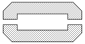

I motori warp di The Next Generation |
| Note |
Le innovazioni principali dei motori della classe Galaxy
sono una maggiore efficienza e un miglior controllo dell'intermix.
La velocità massima è di warp 9,99, e una nave stellare può mantenere tale
velocità solamente per pochi minuti. Il consumo di antimateria è talmente
elevato che il sistema di raffreddamento non può sopperire alle necessità per
troppo tempo.
Per contro, l'accelerazione è stata di gran lunga migliorata. Utilizzando
bobine di campo multiple, ogni bobina genera il proprio campo subspaziale,
quindi può essere creato un vasto spazio di deformazione subspaziale
permettendo una migliore accelerazione. Le navi stellari di classe Galaxy
possono accelerare da 0 a warp 6 in meno di 1 secondo.
La formula per calcolare il rapporto tra la velocità della luce c e la
velocità warp vW fino a warp 9 è:
c = vW (10 / 3)
Per velocità superiori la formula si fa più complessa:
c = vW (((10 / 3) + a * (-Ln(10 - WF))^n) + f1 * ((WF-9)^5) + f2 * ((WF-9)^11))
Dove a = 0,00264320, n = 2,87926700, f1 = 0,06274120 e f2 = 0,32574600.
La parte propulsiva dei motori warp è situata nelle due gondole gemelle ed
è formata da una serie di WFC (Warp Field Coils, bobine del campo warp), su ognuna delle quali si
trova un PIS (Plasma Injection System, sistema di iniezione del plasma);
ogni gondola dispone inoltre di un sistema di separazione di emergenza formato
da 10 gruppi di bulloni esplosivi che possono allontanare la gondola in caso di
emergenza alla velocità di 30 m/s.
Le caratteristiche strutturali delle gondole sono simili a quelle del resto
della nave, in aggiunta abbiamo tre strati interni di cortenide di cobalto che
garantiscono la protezione contro gli elevati stress strutturali causati dal
campo warp.
Gli iniettori del PIS (uno per ogni WFC) sono in duranide di arkenio e
contengono una struttura monocristallina di ferrocarbonite con costrittori
magnetici toroidali in serrite di nalgezio. I controlli operativi e i dati delle
letture di stato dell'iniettore sono garantiti da dodici connessioni ridondanti
con l'ODN
della nave. I piccoli ritardi indotti dal trasferimento dati sull'ODN sono
automaticamente corretti da un apposito software che garantisce alla sezione
tecnica di operare in realtime sugli iniettori. Il ciclo di apertura e chiusura
degli iniettori varia da 25 a 50 nanosecondi; ogni iniettore espone il WFC ad
una scarica di energia che viene convertita in campo warp.
I WFC sono gli effettivi generatori del campo warp. Ogni emiciclo del WFC
misura 9,5 x 43 metri ed ha un nucleo in lega di tungsteno cobalto e magnesio
densificati avvolto da uno strato in cortenide di verterio densificato
elettricamente. Una bobina completa misura quindi 21 x 43 metri con una massa di
34.375 tonnellate. Due set completi di diciotto bobine l'uno hanno una massa di
1.230.000 tonnellate, che costituisce il 25% della massa complessiva della nave.
Quando è investito dal flusso di plasma, il cortenide di verterio di una bobina
provoca il trasferimento dell'energia dal plasma al dominio subspaziale; i
pacchetti quantici dell'energia del campo subspaziale si formano a circa un
terzo della distanza tra la parte interna della bobina e quella esterna e
irraggia verso l'esterno della bobina.
L'effetto propulsivo è ottenuto da tre fattori.
In primo luogo la deformazione del campo è controllabile sull'asse poppa-prua.
Dal momento che gli iniettori emettono il plasma in sequenza, i piani dei campi
warp vengono creati di conseguenza e premono l'uno sull'altro. Le forze
cumulative dei campi warp riducono la massa apparente della nave, imprimendo la
velocità desiderata. Il punto critico di transizione lo si ha quando, per un
osservatore esterno, la nave supera c; quando l'energia del campo warp
raggiunge i 1000 millicochrane, la nave sembra che oltrepassi la barriera di c
in un tempo minore del tempo di Planck (1,3 * 10-43 secondi), permettendo alla
nave di non avere mai una velocità pari a c. Le tre bobine più a prua
di ognuna delle due gondole operano con un leggero spostamento di frequenza
rispetto alle altre per rinforzare il campo warp che contiene la sezione a disco
e per facilitare la creazione della simmetria del campo warp che permette il
movimento della nave.
In secondo luogo la coppia di gondole permette di creare due campi bilanciati
che interagiscono per permettere alla nave di manovrare. La nave può manovrare
introducendo dei ritardi nell'attivazione degli iniettori che modificano la
geometria del campo warp.
Infine la conformazione dello scafo si adatta perfettamente alla conformazione
del campo warp. Durante la separazione della sezione a disco, un apposito
software modifica il controller del campo warp per aggiustare la geometria del
campo warp.
Ogni nave della Federazione presenta un'emissione a curvatura che è
identificabile come una radiazione gamma con un particolare profilo di frequenza
(Future's End - Part II).